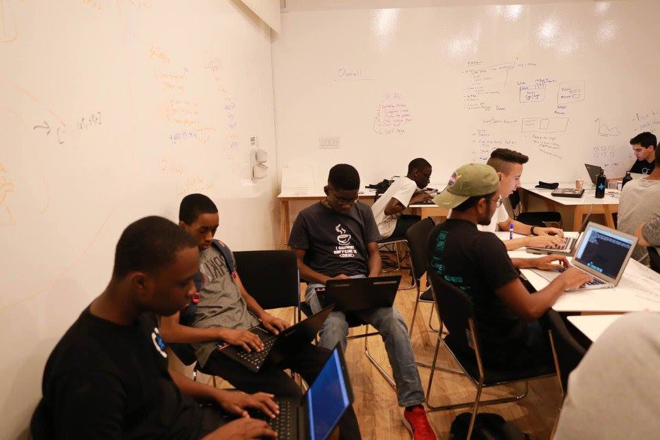
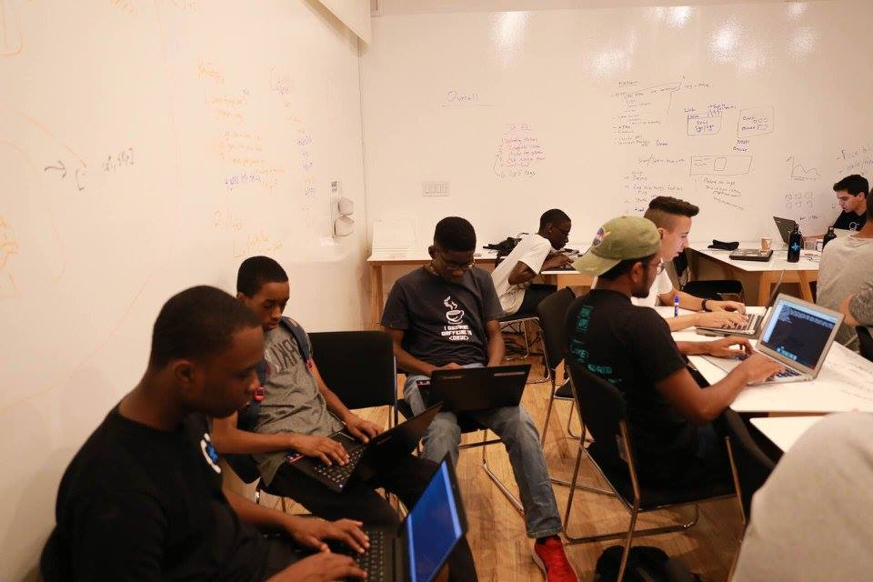

CEO - Charles Marshall
Charles Marshall is an aspiring software engineer with deep interests in technology and economics. He is currently a freshman @ SUNY Fredonia, a public school in Harlem,New York. At school, he maintains academics and leadership positions. Outside of the classroom, Charles Marshall constantly works on his coding projects and helps the Harlem community. Aside from technology and programming, he studies different aspects of business and programming from a variety of books and online resources.He hopes one day to give back to his community in the Bronx and start a program to help kids learn how to code I look forward to similar experiences and opportunities, throughout my years in college at the State University of Fredonia and always be willing to work with this team improve. I feel we should make kids open to joining as well as maintaining your grades which aren't implemented as it should be. Being on the Robotics it gave me experiences like dealing with kids who I would think are weird and opportunities that I couldn't even imagine join programs that inspired me to do better in life.

 
